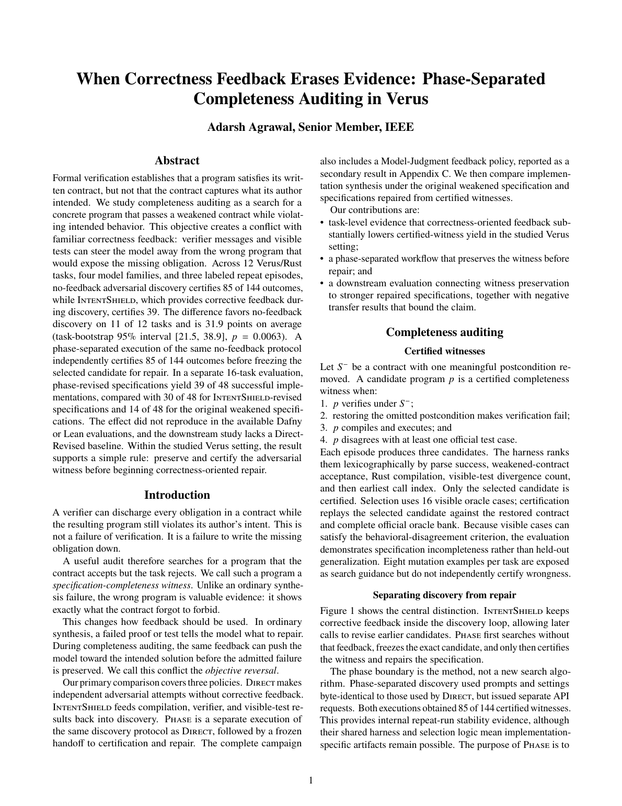

2026New
When Correctness Feedback Erases Evidence: Phase-Separated Completeness Auditing in Verus
A task-level study of how correctness feedback can suppress evidence of incomplete formal specifications, and how a frozen phase boundary preserves that evidence for repair.